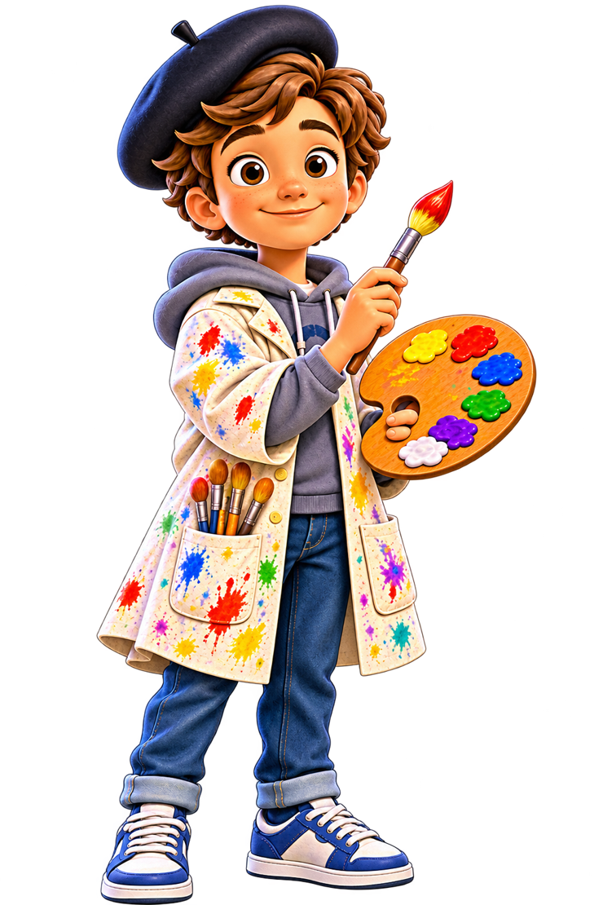

🎨 Piccoli artisti
Disegna, sperimenta e crea la tua opera!
Prova le matite dalla HB alla 6B: più cresce il numero B, più il segno diventa morbido e scuro. Usa anche pastelli e pennelli!
Pronto per disegnare!
🧠 La sfida dei piccoli artisti
Rispondi a 3 domande estratte a caso. Le risposte cambiano posizione ogni volta!